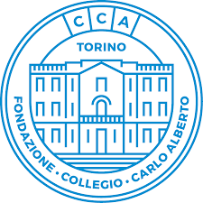
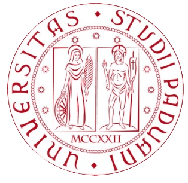

Academic positions

University of Milano-Bicocca, Department of Economics, Management and Statistics (DEMS), Milan, Italy.
- Assistant Professor (RTD-B), 2023 - Present
- Assistant Professor (RTD-A), 2020 - 2023
Duke University, Department of Statistical Science, Durham (NC), U.S.A.
- Postdoctoral Associate, 2020 - 2020
- Research Associate, 2019 - 2020
I worked with prof. Amy Herring and prof. David Dunson. My research focused on Bayesian methods for robust clustering, dimensionality reduction, and sequential species discovery.

Collegio Carlo Alberto, Fondazione “de Castro” and Collegio Carlo Alberto, Turin, Italy.
- Research Affiliate, 2017 - 2020
I have been a Research affiliate at the Statistics initiative.
Education
Ph.D. in Statistical Sciences, Bocconi University, Milan, Italy.
Period 2015–2020. Ph.D. awarded with honors.
Thesis title: Finite-dimensional nonparametric priors: theory and applications.
I worked under the joint supervision of prof. Antonio Lijoi and prof. Igor Prünster.

M.Sc. in Statistical Sciences, University of Padova, Padua, Italy.
Period 2013 - 2015. Final mark: 110/110 with laude.
Thesis title: Functional telecommunication data: a Bayesian nonparametric approach.
Advisor: Bruno Scarpa.
B.Sc. in Statistics, Economics & Finance, University of Padova, Padua, Italy.
Period 2010–2013. Final mark: 110/110 with laude.
Thesis title: Box-Cox transformation: an analysis based on the likelihood.
Advisor: Nicola Sartori.